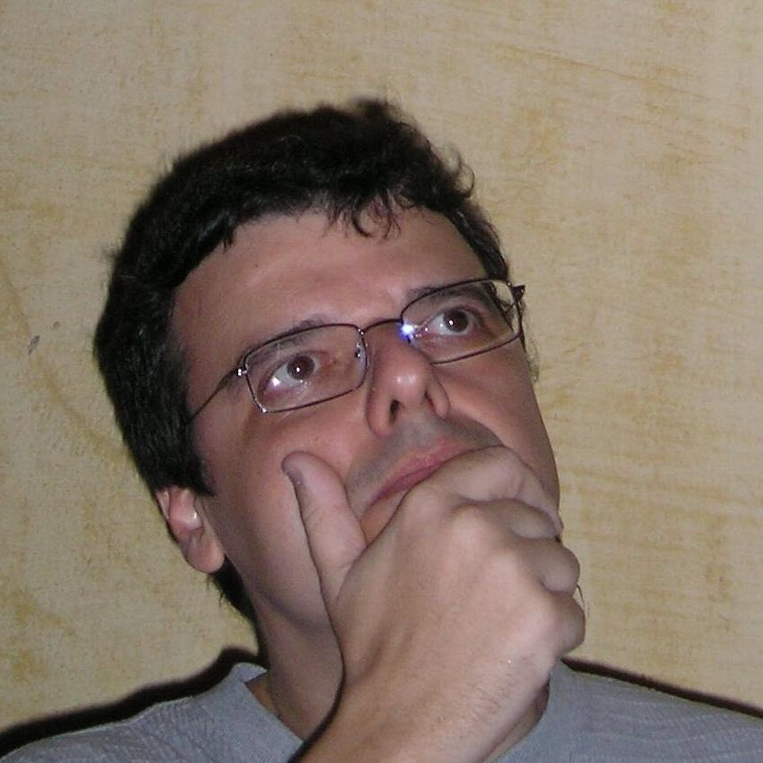
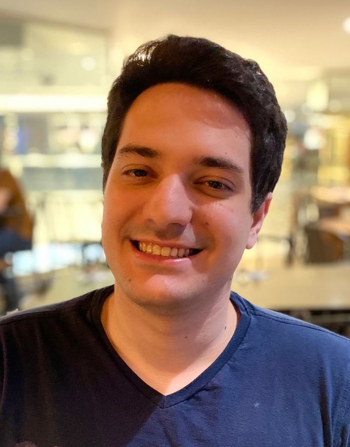
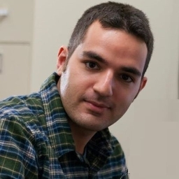
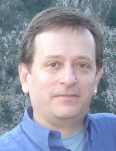
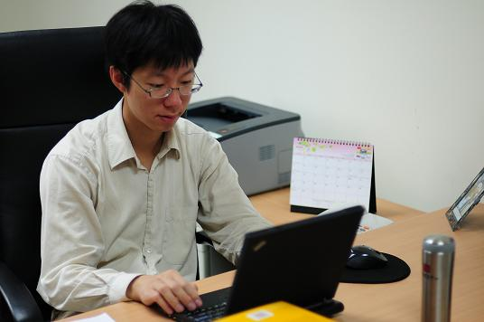

ROSTER OF INSTRUCTORS
If you use the book as a text for your course, please let us know so we can include you in the roster. An alphabetic list is included below.
Luiz Wagner Pereira Biscainho (with the assistance of Eduardo Alves da Silva and Leonardo barreto Alves), Federal University of Rio de Janeiro
 - CPE780 - Mathematical Fundamentals of Statistical Learning, 2020
B. Keith Jenkins, University of Southern California
- EE 660 Machine Learning II: Mathematical Foundations and Methods, since 2021
- EE 660 Machine Learning: Foundations and Methods (Fall 2014--Fall 2020)
Jiaming Mao, Wang Yanan Institute for Studies in Economics (WISE), Xiamen University
- Econ 451/521: Data Analysis for Economics, since 2019
Mahdi Roozbahani, Georgia Institute of Technology

Abdelkader Baggag, Qatar Computing Research Institute (QCRI) & Hamad Bin Khalifa University (HBKU)
Thomas A. Lasko, Vanderbilt University School of Medicine
- Part of BMIF 315 - Methods in Biomedical Informatics, Spring 2015
Chuanyi Ji, Georgia Institute of Technology
Carlos Pedreira, Federal University of Rio de Janeiro (UFRJ), Brazil
- Machine Learning, PESC-COPPE program, (Brazilian) Fall 2013, and Spring 2014
Felipe França, Federal University of Rio de Janeiro (UFRJ), Brazil
- Machine Learning, PESC-COPPE program, (Brazilian) Fall 2013
Hsuan-Tien Lin, National Taiwan University
- Machine Learning Foundations, NTU-Coursera, September 2014
- CSIE 5043 Machine Learning, Fall 2014
- Machine Learning Foundations, NTU-Coursera, November 2013
- CSIE 5043 Machine Learning, Fall 2013
- CSIE 5043 Machine Learning, Fall 2012
Yaser Abu-Mostafa, Caltech

- CS/CNS/EE 156a Learning Systems, Spring 2012: 151 undergraduate and graduate students; same course was broadcast live online. Taught regularly at Caltech since 2012, with 4 parallel sessions at edX.
Alphabetic List
- Berdakh Abibullaev, Nazarbayev University (first offered: 2016)
- Ahmed Abukmail, University of Houston (first offered: 2018)
- Amir Ashouri, University of Toronto (first offered: 2019)
- Yaser Abu-Mostafa, Caltech (first offered: 2012)
- Abdelkader Baggag, Hamad Bin Khalifa University (HBKU), Qatar (first offered: 2017)
- Ivan Bajic, Simon Fraser University (first offered: 2017)
- Luiz Wagner Pereira Biscainho, Federal University of Rio de Janeiro (first offered: 2020)
- Bowei Chen, University of Lincoln, UK (first offered: 2016)
- Sanmay Das, Washington University in St. Louis (first offered: 2014)
- Felipe França, Federal University of Rio de Janeiro (first offered: 2013)
- Monson Hayes, George Mason University (first offered: 2015)
- Gary Holness, Delaware State University (first offered: 2014)
- Chuanyi Ji, Georgia Institute of Technology (first offered: 2015)
- B. Keith Jenkins, University of South California (first offered: 2014)
- Min-Yen Kan, National University of Singapore (first offered: 2017)
- Ashish Khisti, University of Toronto (first offered: 2017)
- Anthony Kuh, University of Hawaii at Manoa (first offered: 2012)
- Thomas Lasko, Vanderbilt University School of Medicine (first offered: 2015)
- Ben Liang, University of Toronto (first offered: 2019)
- Hsuan-Tien Lin, National Taiwan University (first offered: 2014)
- Malik Magdon-Ismail, Rensselaer Polytechnic Institute (first offered: 2012)
- Jiaming Mao, WISE, Xiamen University (first offered: 2019)
- Timothy Miller, Binghamton University (SUNY) (first offered: 2015)
- Shahin Nazarian, University of Southern California (first offered: 2016)
- Tokunbo Ogunfunmi, Santa Clara University (first offered: 2020)
- Carlos Pedreira, Federal University of Rio de Janeiro (first offered: 2013)
- Etienne Pienaar and Tim Gebbie, University of Cape Town (first offered: 2017)
- Mahdi Roozbahani, Georgia Tech (first offered: 2019)
- Roozbeh Razavi-Far, University of Windsor (first offered: 2019)
- Peter Sadowski, University of Hawai'i at Manoa (first offered: 2020)
- Anurag Sharma, University of the South Pacific (first offered: 2019)
- Ted Willke, Portland State University (first offered: 2019)
- Mehdi Zargham, University of Dayton (first offered: 2015)
- Jiayu Zhou, Michigan State University (first offered: 2016)
{kind=link}
{kind=link}